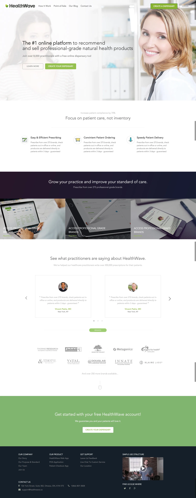
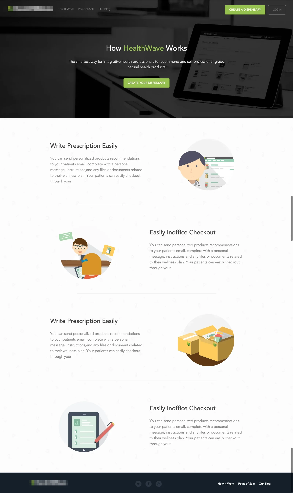
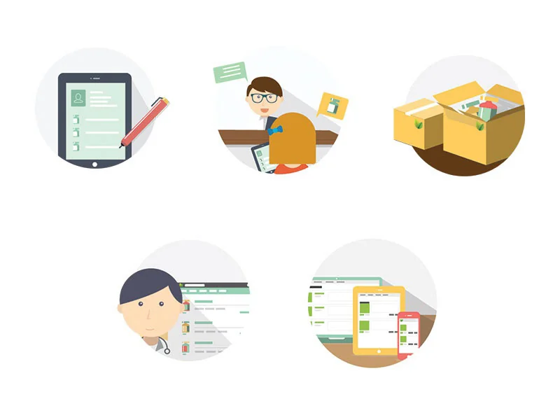
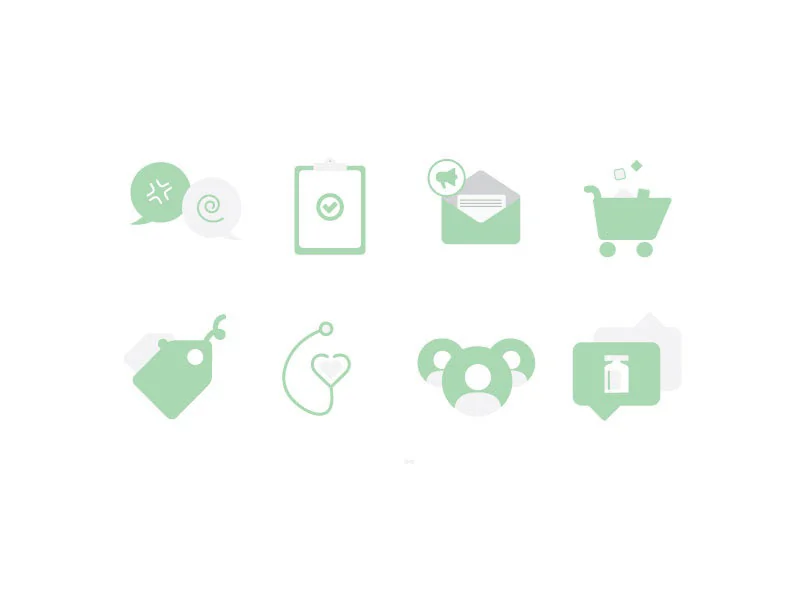

HealthWave was an Ottawa platform for practitioners to recommend and sell professional-grade natural health products, later part of Fullscript. As the team's designer and front-end developer I designed and built its public marketing site: the landing pages, an illustration set and an icon set. This is a visual project rather than a case study. The pages are shown as the full-height mockups they were designed as.
The home page had three jobs on one scroll: explain the platform to a practitioner in a sentence, show the product on real devices, and get them to create a dispensary. The second page, How it works, carries the longer explanation with one illustration per step. Both were designed as full-height mockups and then built by me in HTML, CSS and JavaScript.
The copy in the mockups is placeholder. The shipped site carried the real text, and the company has redesigned it since.


The site needed a friendlier face than stock photography alone. I drew a set of five spot illustrations, one per feature, in a flat style on circular grounds, and an eight-icon set for the feature row and the footer. One line weight, one corner radius, one pair of greens, so both sets read as a single family across the two pages.


It is a page from 2016 and it shows. Stock photography in the hero, a Google+ icon in the footer, light grey body text that would not pass today's contrast checks. What still holds up is the structure, one message per band and a clear next step at the bottom of each, and the fact that one person designed it, illustrated it and built it.
Today I would start from the copy instead of the layout, photograph the product instead of the people, and define the tokens before drawing a single page.